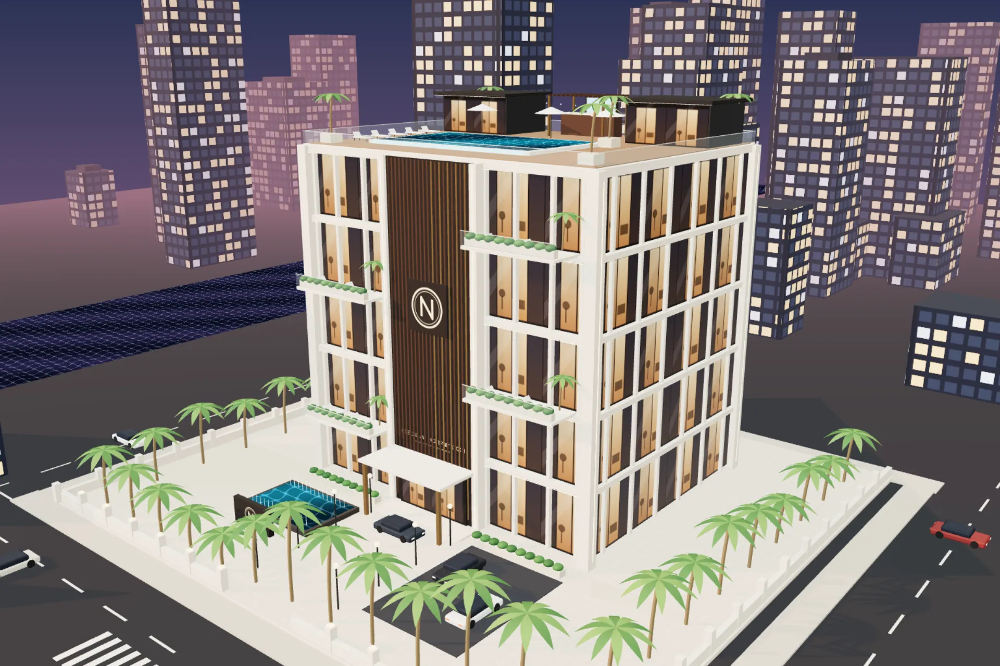
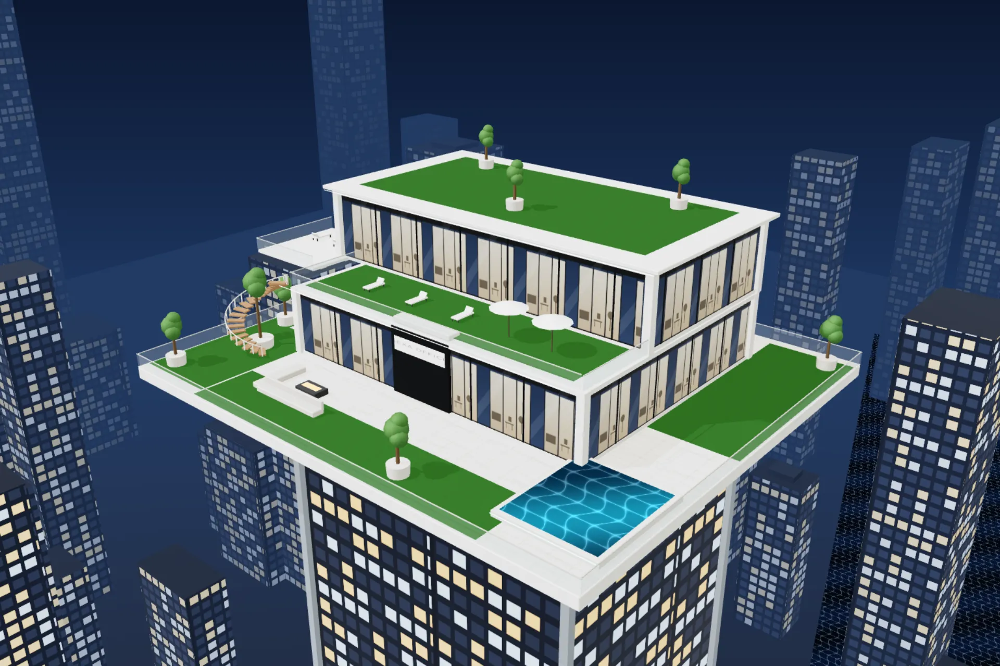
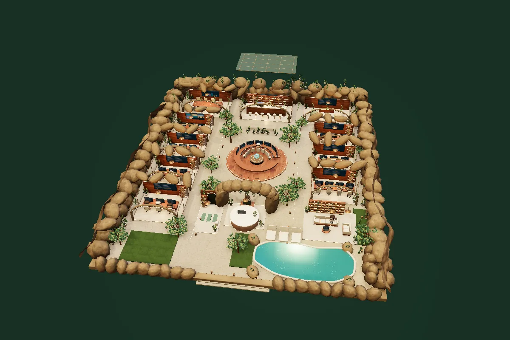

Kantor AI yang langsung kerja.
Nexaoffice: 18 agen AI bekerja di satu kantor, kamu yang menyetujui.
Menyiapkan kantor 3D
Dari satu perintah jadi paket kerja
- Riset Raka mencari bahan di Google Trends, Google News, dan Hacker News.
- Produksi Naskah, carousel, rencana Remotion (Bima), dan prompt Google Flow (Fira). Naskah kamu cek dulu.
- Persetujuan Tidak ada yang terbit sebelum kamu setujui.
- Rencana Arga menyusun PRD dan arsitektur dari brief atau dokumenmu.
- Kerja dan uji Rani mendesain, Fajar menulis kode, Tio menguji, Damar mengaudit keamanan.
- Rilis Paket rilis siap. Live setelah kamu izinkan.
Pilih suasana kantornya



Yang kamu dapat
- Workspace sendiri
- Web Nexaoffice di Vercel atau VPS-mu.
- Kantor 3D
- Tiga tema kantor, 18 karakter agen.
- Dua divisi
- Konten dan Build App.
- Penyedia AI bebas
- Claude, Gemini, OpenAI, OpenRouter, 9router.
- Pengaturan AI
- Ganti penyedia dan key tanpa buka kode.
Panduan di kit
- Pasang di Vercel
- Fork, import, isi kunci akses, deploy.
- Pengaturan AI
- Server, API key lokal, atau VPS dari satu menu.
- Server VPS
- Satu skrip: Node, layanan otomatis, HTTPS.
- Workspace
- Alur Konten dan Build App sampai persetujuanmu.
- Karakter agen
- Galeri 18 karakter
Harga dan cara pesan
| Bagian | Biaya |
|---|---|
| Kit Nexaoffice | Harga belum ditentukan |
| Penyedia AI | Sesuai pemakaian, dibayar ke penyedia pilihanmu |
| Hosting | Akun Vercel gratis cukup untuk mulai |
Kontak pembelian: Kontak penjual belum diisi
Yang sering ditanya
Agen bisa posting sendiri?
Bisa, hanya konten di Antrian Posting yang sudah kamu setujui. Yang belum disetujui tidak pernah diunggah. Unggah jalan setelah sambungan posting (Metricool) kamu aktifkan; sebelum itu hasil disimpan di folder laptopmu.
API key disimpan di mana?
Kamu pilih di menu Pengaturan AI: di server (Vercel atau VPS), atau di browser perangkatmu sendiri.
Kantor 3D berat di laptop?
Kantor berhenti saat tidak terlihat, dan di Workspace memakai kualitas ringan.
Bedanya dengan chat AI biasa?
Tiap agen punya peran. Hasil dicek agen lain dulu.